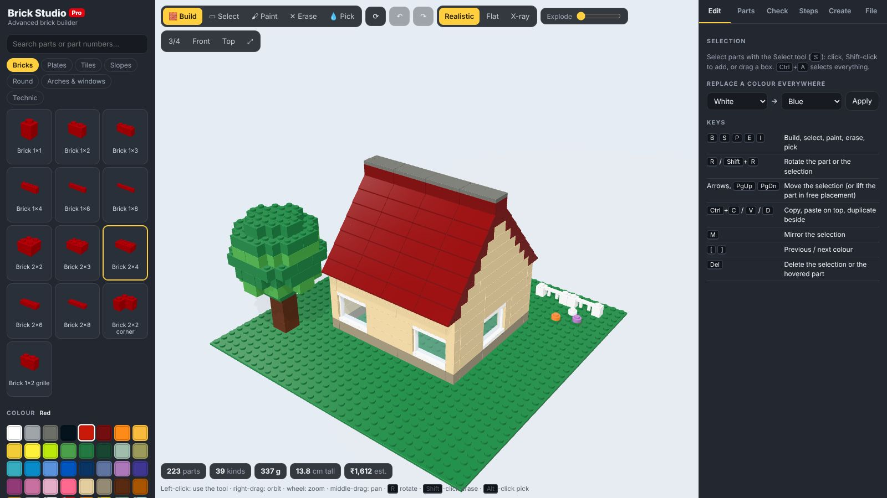
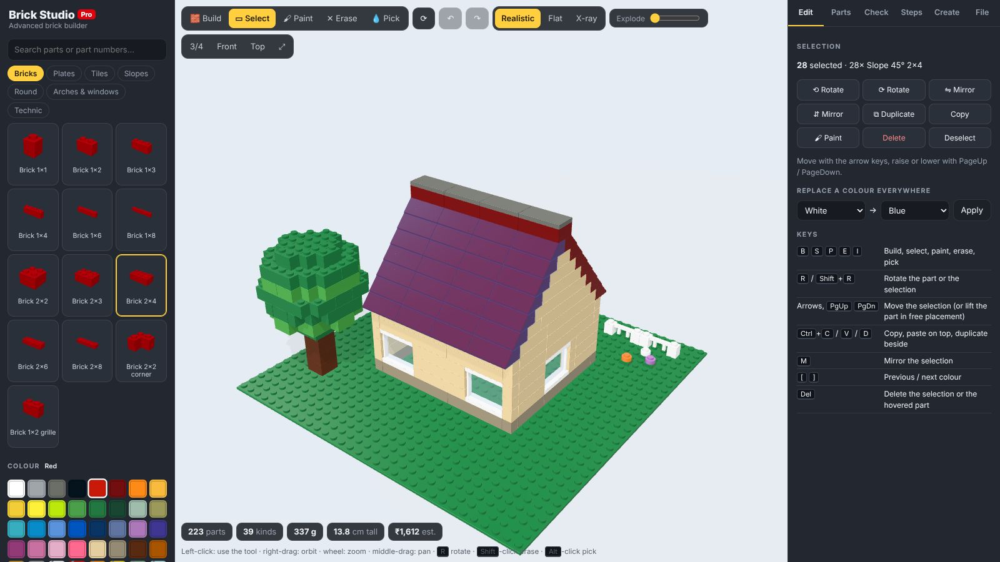
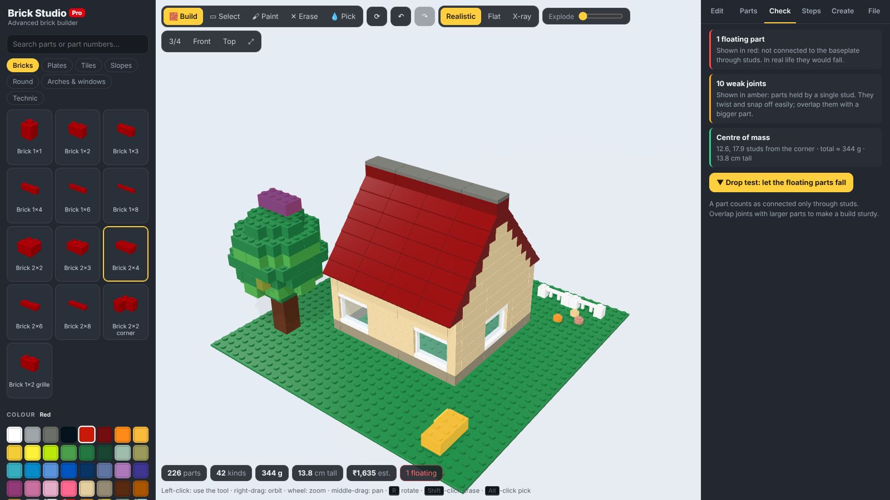
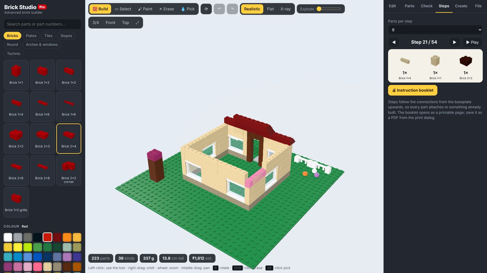
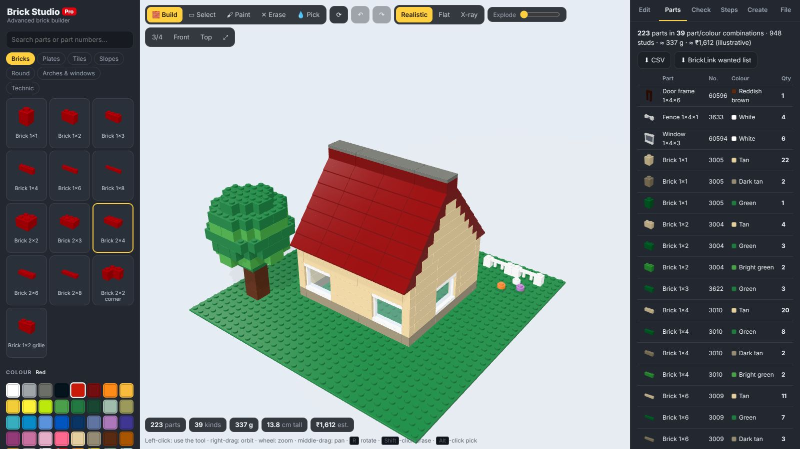
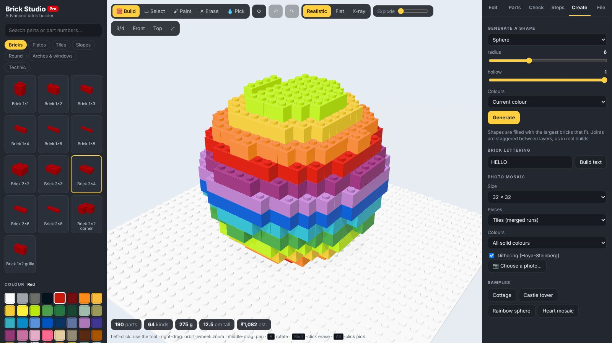
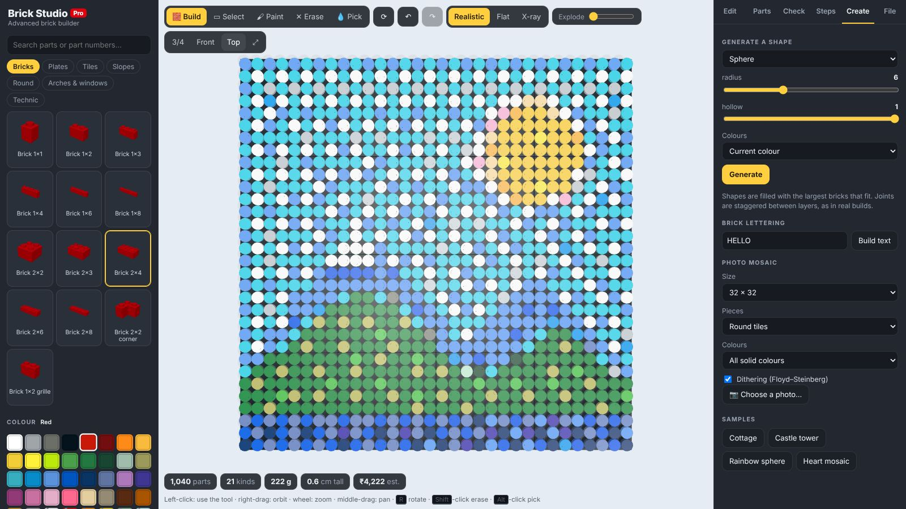
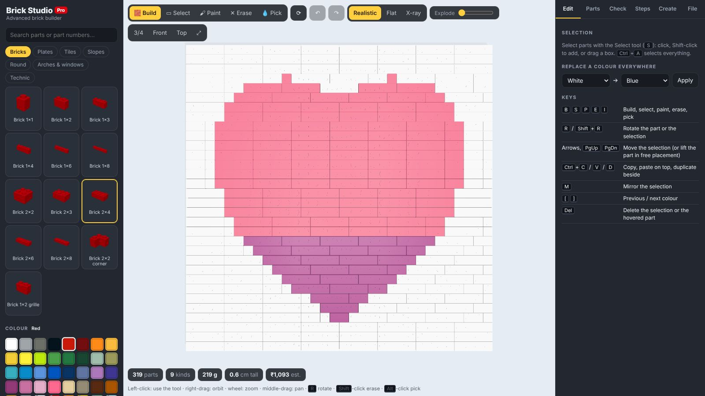
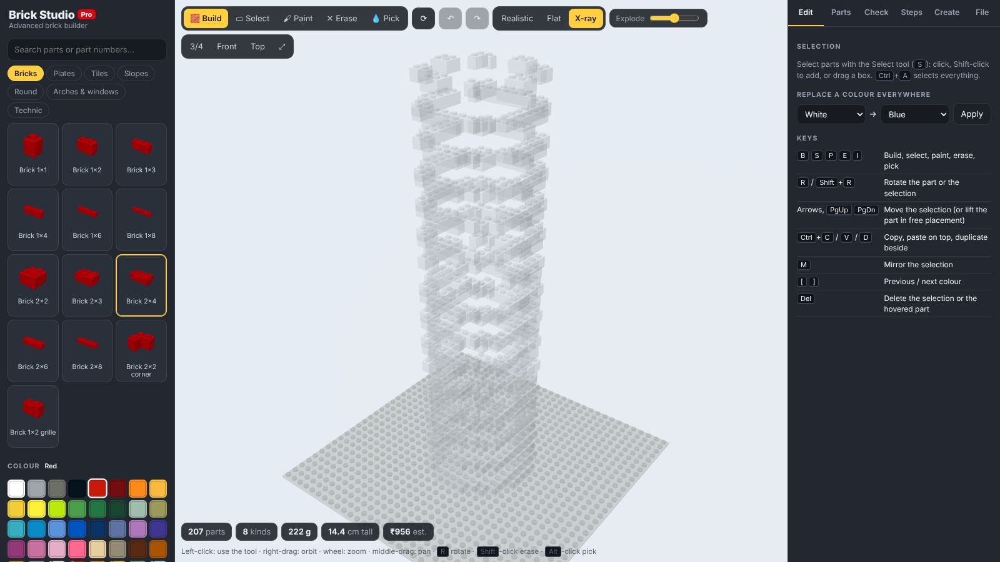
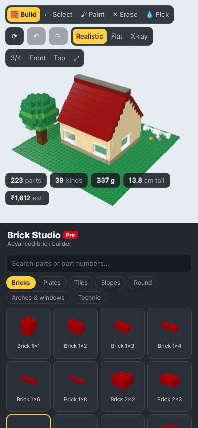

Brick Studio Pro¶
An advanced 3D builder for interlocking plastic bricks, a step up from Brick Builder. Parts snap only where their studs and anti-studs actually connect. You can select and edit groups of parts, check whether a build would hold together, and get building instructions and a parts list. Generators make shapes, lettering and photo mosaics, and builds export to LDraw and BrickLink.
Open Brick Studio Pro Source on GitHub

Note
Brick Studio is an independent project, not affiliated with or endorsed by the LEGO Group. Part and colour numbers are given for convenience; check them before ordering. Weights and prices are estimates.
Parts and colours¶
There are 69 parts in seven categories and 40 colours, including transparent ones.
| Category | Parts |
|---|---|
| Bricks | 1×1 to 2×8, a 2×2 corner and a 1×2 grille |
| Plates | 1×1 to 8×8, a 2×2 corner, left and right wedge plates and a 1×2 jumper |
| Tiles | 1×1 to 2×4 and a round 1×1 tile |
| Slopes | 45°, 33° and 65° slopes, inverted slopes and curved slopes |
| Round | Round 1×1 and 2×2 bricks and plates, a cone and a dome |
| Arches & windows | Arches, window frames, a door frame and a fence |
| Technic | Technic bricks 1×2 to 1×8 with pin holes |
Each part carries its LDraw / BrickLink part number, and each colour its LDraw and BrickLink colour numbers. Search the parts panel by name or number.
Units follow the real system: one stud is 8 mm, a plate is 3.2 mm and a brick is three plates.
Building¶
| Tool | Key | What it does |
|---|---|---|
| Build | B |
Place the current part. R rotates it |
| Select | S |
Click, shift-click or drag a box to select parts |
| Paint | P |
Recolour a part with the current colour |
| Erase | E |
Remove a part (or shift-click with any tool) |
| Pick | I |
Take the part and colour from the build (or alt-click) |
Snapping. A part goes where it really connects:
- on top of studs;
- under an overhang, held by the anti-studs of the part above;
- beside a part, dropped to the nearest connecting height.
Tiles and slope faces have no studs, so nothing attaches on top of them. Free
placement lifts the connection rule; PgUp / PgDn then lift the part.
Editing a selection.
- Move with the arrow keys and
PgUp/PgDn; rotate withR; mirror withM. Ctrl+C/Ctrl+Vcopy and paste on top;Ctrl+Dduplicates beside.- The inspector lists what is selected and has buttons to rotate, mirror, duplicate, copy,
paint, delete or deselect it.
Ctrl+Aselects everything. - Replace a colour everywhere swaps one colour for another across the build.
- Undo and redo cover every change.

Checking a build¶
The Check tab analyses the connections between parts:
- Floating parts are not connected to the baseplate through any chain of studs. They show in red.
- Weak joints hang on a single stud. They show in amber.
- It reports the number of separate groups, the weight, the height and the centre of mass.
- Drop test animates what would happen if you lifted the model: unsupported groups fall.

Building instructions¶
The Steps tab turns the build into numbered steps. The order follows the connections outward from the baseplate, so every part attaches to something already built. Each step highlights its new parts and shows a parts callout. Choose 4 to 12 parts per step, play the steps back, or open a printable instruction booklet and save it as a PDF.

Parts list¶
The Parts tab counts every part and colour combination, with a thumbnail, part and colour numbers, and estimated weight and cost. Export it as CSV or as a BrickLink wanted list (XML).

Creating¶
Shape generators: sphere, dome, stepped pyramid, castle tower, wall with windows, tree and spiral staircase, each with its own sliders and five colour schemes (current colour, stripes, sunset gradient, rainbow, stone).
A brick optimizer fills each shape with the largest bricks that fit. It alternates their direction from layer to layer and prefers placements that bridge the joints below, as you would in a real build. Any part left unconnected is removed.

Brick lettering builds a word from a 5×7 pixel font.
Photo mosaics turn a picture into a 16×16 to 48×48 mosaic:
- Pieces: tiles (merged into longer runs), round tiles, or plates.
- Palettes: all solid colours, greys, or warm sepia.
- Colours are matched in CIELAB space, with optional Floyd–Steinberg dithering.

Samples: a cottage, a castle tower, a rainbow sphere and a heart mosaic.

Views¶
- Realistic, flat or X-ray rendering.
- An explode slider spreads the layers apart.
- Camera presets (3/4, front, top) and frame-the-build (
F).

Files¶
- The build is saved in the browser automatically.
- Brick Studio JSON saves and reopens a build.
- LDraw
.ldrexport and import, for LeoCAD, Stud.io and other LDraw tools. - BrickLink wanted list and CSV parts lists.
- PNG screenshot and GLB 3D model.
Deep links: #sample=cottage (or tower, sphere, heart) opens a sample, and
&tab=check (or bom, steps, create, file) opens a tab.
On a phone¶
The layout stacks the 3D view, the parts panel and the tabs. Tap to use the current tool, drag to orbit and pinch to zoom.

How it works¶
| File | Contents |
|---|---|
src/catalog.js |
Parts (size, shape, studs, anti-studs, occupied cells, numbers, weight) and colours |
src/model.js |
The build: placement, collisions, connections, undo, stability, instructions, BOM, LDraw / BrickLink / CSV |
src/generators.js |
Shape voxels, the brick optimizer, lettering and mosaics |
src/geometry.js |
Part meshes: rounded boxes, studs, extruded slopes and arches, lathed round parts |
src/samples.js |
The sample builds |
src/main.js |
Scene, tools, panels and tabs |
Parts render as one instanced mesh per part and colour, so builds of a thousand or more parts stay smooth. LDraw files use 20 LDU per stud and 8 per plate, with −y up.